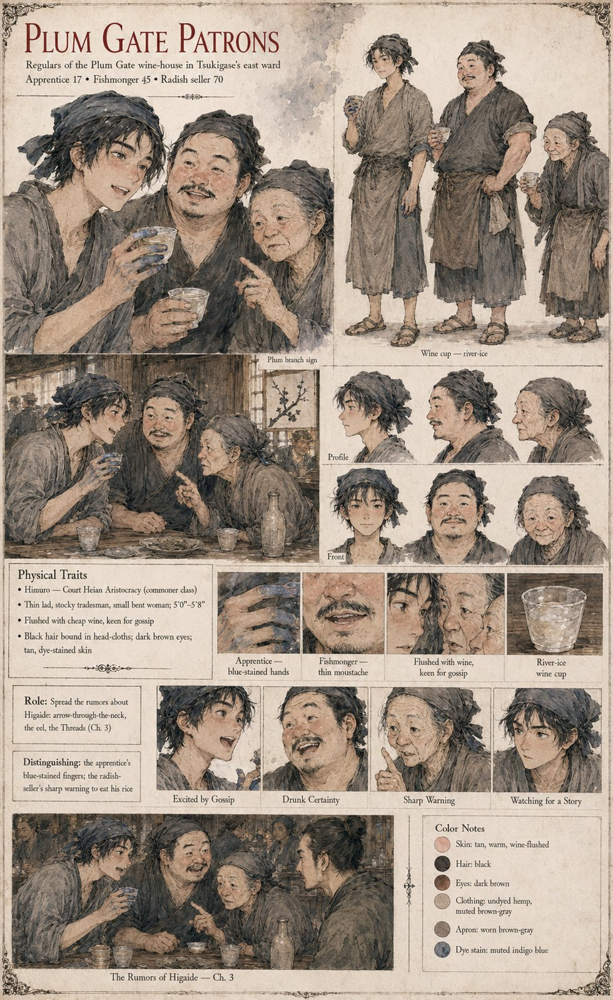

The Plum Gate Patrons
Regulars of the Plum Gate wine-house in Tsukigase's east ward · a dyer's apprentice, a fishmonger and a seller of pickled radish · 17, 45 and 70 by their sheet
The Plum Gate is a long, low, smoky wine-house near the east ward's market in Tsukigase, famous for a cheap cloudy wine that its keeper calls river-ice and for the fact that every clerk in the Left Ministry's lesser offices drinks there on the last day of each week. By the twentieth of Eldren the tale that Sōroku has put together in a back room has entered the wine-houses of the city, and it does there what tales do. It is said in the Plum Gate that the Captain has always carried two swords like a man with two minds; that the pony was drugged, or was given nothing and was merely looked at by the Captain with the eye of a fox-woman's husband; that his father cursed the Sugino family on his deathbed in a voice heard three streets away; that he is in fact innocent and is being made to carry some more important man's guilt.
Three of its regulars are known by what they say. A dyer's apprentice says that he has it on good authority that the boy's neck was broken by an arrow. A fishmonger says, with the air of a man giving evidence, that he once sold the Captain an eel. An old woman who sells pickled radish by the door, raised on the nursery warning that a death with nobody's name on it is the work of the Threads, the palace women of the dead capital who were said to have killed so cleanly that no thread ever led back to a hand (a legend of Case 4099, from which Himuro descends), says only that a boy who died without a hand on him will never be properly buried, and tells the apprentice to eat his rice. Nobody in the Plum Gate says the word cat. The cat is not, in the language of the wine-house, a cause of anything. The groom Kinji is the one man in the case who says it aloud, to the Examiner.
The manuscript gives the three their trades and their remarks, and no names, ages or looks. The sheet's 17, 45 and 70, the thin lad, the stocky tradesman and the small bent woman, their head-cloths, tan skin and dark eyes, the apprentice's blue-stained fingers, the fishmonger's thin moustache and the cups of river-ice are its own, and so is its role line, Spread the rumors about Higaide: arrow-through-the-neck, the eel, the Threads. Its last scene, The Rumors of Higaide, draws the three heads together over the table with a fourth man, in a dark topknot, turned away at the edge; the sheet does not say who he is.